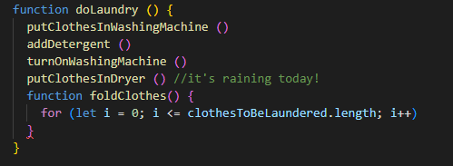

The relationship between JavaScript, HTML and CSS
You have a door in front of you. It's purple. There's an engraving of a whale on it. The handle is round, and golden. You reach out to turn the handle and...absolutely nothing happens.
My non-technical friend, you've just encountered a website without JavaScript. The structure of the door, the frame, the fact that there is a handle, is all HTML. The delightful purple-ness, the whale, the shape and colour of the handle are all CSS. But you need JavaScript (henceforth to be known as JS) to interact with it. JS tells the door that it should open when you turn the handle.
Control Flow and Loops
JS is a list of instructions for how the website should react when you interact with it. The Control Flow refers to the fact that the computer reads your JS from top to bottom, like a book... unless you tell it to pause and re-read a section until you're satisfied it's done something - that's a Loop. You could think of this like doing laundry: the list of instructions are something like:
What's the DOM?
To work flexibly as a web developer; whether that's for an organisation or for myself I'm currently undecided. At this stage I don't have ambitions to get into leadership pathways.
Arrays vs Objects?
To work flexibly as a web developer; whether that's for an organisation or for myself I'm currently undecided. At this stage I don't have ambitions to get into leadership pathways.
What's a function?
To work flexibly as a web developer; whether that's for an organisation or for myself I'm currently undecided. At this stage I don't have ambitions to get into leadership pathways.